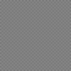

Grafický formát PNM (1)
Vytvořte programem obrázek 8x8 šachovnice ve formátu PBM (varianta P1), tj. střídejte černá a bílá pole. Výstup by mohl vypadat třeba takto:
nápověda
Cílem úlohy je spíše vymyslet vhodný způsob generování černých a bílých polí než jen prostě vyrobit obrázek.
řešení (pnm.sachovnice/1_pbm_ascii.py)
řešení (pnm.sachovnice/1_pbm_ascii.v2.py)
Zopakujte si předchozí úlohu, ale udělejte tu šachovnici větší, třeba 100x100 nebo i víc. Vyrobíte tak bezva zrakový klam ^_^
Ukázkový výstup:
Ukázkový výstup:

nápověda
Ideálně byste mohli zobecnit algoritmus z první úlohy tak, aby zvládal libovolněrozměrné pole.
řešení (pnm.sachovnice/2_pbm_ascii.py)
Zopakujte si znovu první úlohu, ale tentokrát použijte formát PGM v ascii-variantě P2. Barvy políček generujte náhodně např. pomocí funkce
random.randint(SPODNÍ_MEZ, HORNÍ_MEZ). Ukázkový výstup:
řešení (pnm.sachovnice/3_pgm_ascii.py)
Ještě jednou si zopakujte první úlohu, ale tentokrát v RGB-formátu PPM ve variantě P3. Přitom:
- Barvy políček generujte sice náhodně, ale všechny v odstínu té samé barvy.
- Barvy políček generujte zcela náhodně.
nápověda
Pro odstíny jedné barvy jeden z barvových kanálů náhodně měňte a pro zbývající dva vyberte vhodné pevné hodnoty.
řešení (pnm.sachovnice/4_ppm_ascii_green.py)
řešení (pnm.sachovnice/4_ppm_ascii_random.py)
Vyřešte znovu úlohu číslo 3, ale tentokrát použijte binární formát P5.
nápověda
Úloha se dá řešit buď zápisem do binárního souboru (řešení 1) nebo zápisem do textového souboru (řešení 2). Řešení 1 vyžaduje znalost práce s binárními dat (tedy
b'', bytes(), bytearray()), u řešení 2 si zase musíte dávat velký pozor, abyste zapsali skutečně jen to, co máte (čili na každý poslaný znak se musí zapsat skutečně pouze jeden bajt; primárně to znamená vybrat vhodné jednobajtové kódování a sekundárně pohlídat si platformně nezávislé zapisování \n, pokud ho budete používat jako oddělovač).
řešení (pnm.sachovnice/5_pgm_binary_bin.py)
řešení (pnm.sachovnice/5_pgm_binary_txt.py)
Vyřešte znovu úlohu číslo 4, ale tentokrát použijte binární formát P6.
nápověda
Sem patří stejný komentář jako k úloze číslo 5.
Nakonec jsme si úmyslně nechali řešení úlohy číslo 1 (a případně pak i 2) v binárním formátu P4. Tento formát je totiž (z pochopitelných důvodů) velmi odlišný od všech ostatních zde probíraných. Ukázkový výstup: 
nápověda
Nezapomeňte, že formát P4 slučuje vždy osm sloupečků do jednoho bajtu – je totiž monochromatický. Plus si dejte pozor na správný převod znaků na bajty (viz komentáře k úlohám 5 a 6).